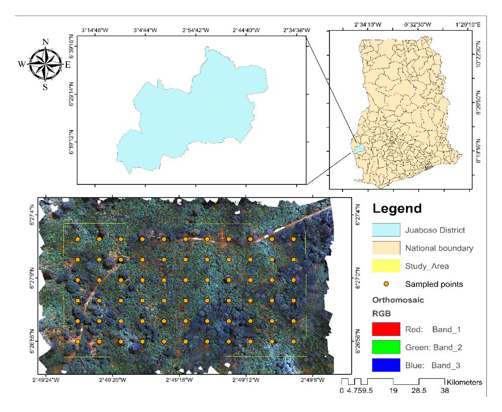

MSc research · Juaboso, Ghana
Cocoa nutrient assessment with UAV imagery
Investigating soil–leaf nitrogen, phosphorus and potassium relationships, and the use of multispectral predictors to estimate cocoa foliar nutrients.
Part of FRAME-Cocoa, sponsored by the African Plant Nutrition Institute.
My contribution
UAV and field-data work, multispectral predictor preparation, feature screening, soil–leaf analysis and comparative machine-learning modelling.
Research finding
Spectral predictions were generally weak and constrained by limited nutrient variability. Soil-to-leaf Random Forest models showed stronger fits for phosphorus and potassium than nitrogen.
Submitted thesis, 2025; related manuscript in preparation
